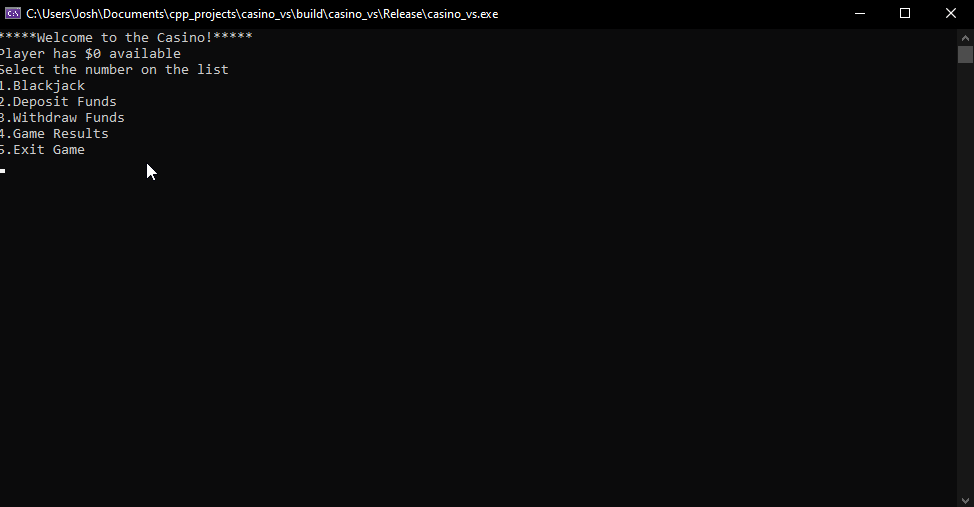
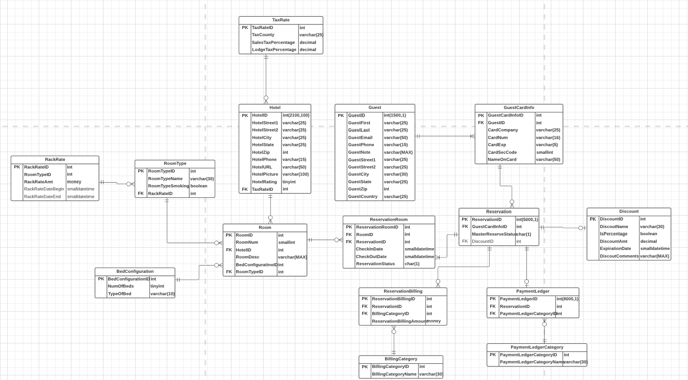
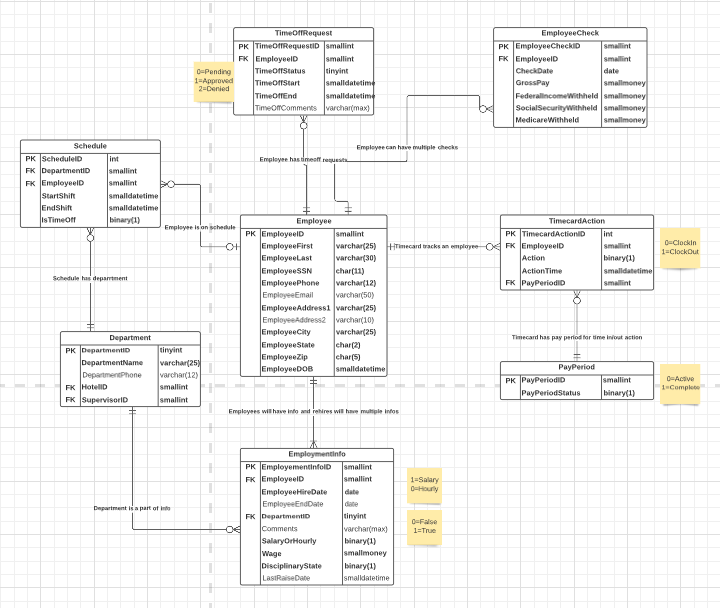
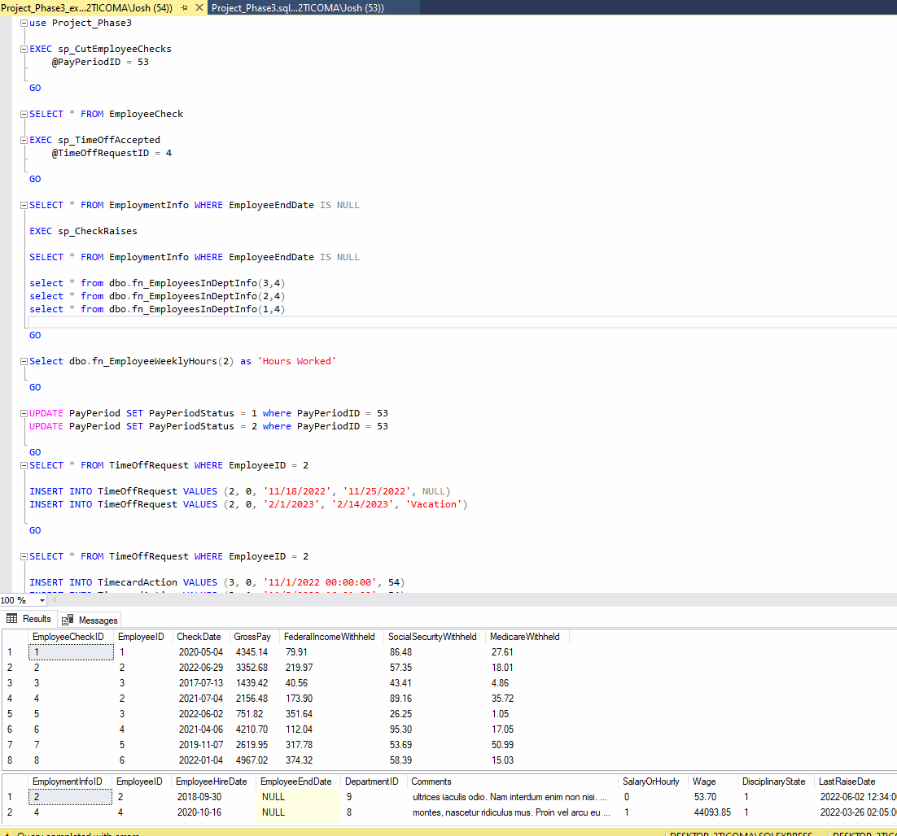

Projects
Simple Store System
Solo Full Stack School Project
-
This application can track different kinds of products for a small business owner. Seamlessly add, update, or delete inventory items. Depending on items that are being added, the form adapts to the category being entered. The information that is entered persists and is stored on a database. There is error checking to validate the items being entered are accurate. We can also search the inventory list for items based on input and can include a category to add precision to the search.
-
Application can be used by two different front-end frameworks. One uses the Windows Forms development platform. The other uses the Windows Presentation Foundation (WPF) UI framework.
-
Utilizes ADO.NET as the back-end to communicate with SQL Server.
-

Hover to magnify
BlackJack Game
Solo Personal Project
-
This application is the game of blackjack in written in C++. Rules of blackjack are the player and dealer both get dealt two cards. The player can see both of their cards but only one of the dealers card. After the 4 cards are dealt, the player can choose to "hit" which is requesting another card, or they can "stand" which means they will play with the cards they have. Once the player decides to stand, the dealer will reveal the second card, if it is lower than 17 the dealer will draw another card until they are greater than 16 or "busted" which is a total card value over 21. The winner is the highest side that isn't over 21.
-
Though the program is used on the command line, there is a menu and interface the player can interact with. There is a player tracking system where you deposit and withdraw funds. There is also a stat tracking wins and losses. These stats are not persistent at this time.
-
I have implemented the correct behavior of the dealer which is if the dealer has a 17 but one of the cards is an "high" ace meaning it is worth 11, the dealer will hit again until they have at least a hard 17 (no high aces) or busts.
- 
FARMS Database
Solo Relational Database School Project
-
Objective of this assignment was to create a database program for a hotel chain name FARMS. This database managed the physical hotels and rooms, reservations, guests, billing, and employees.
-
Created an Entity Relationship diagram planning out the relationships of the tables and how we would organize our data.
-
Used T-SQL to create the database and input dummy data into the tables to have a working database. Triggers were used to make sure data being entered was accurate.
-
Used stored procedures with cursors to provide some functionality to users. One of the procedures is used to calculate the gross pay of an employee by fetching the clock-in and clock-out times to determine hours worked and uses hourly rate that is stored in another table to provide the gross pay for a pay period.
-



Hover to magnify